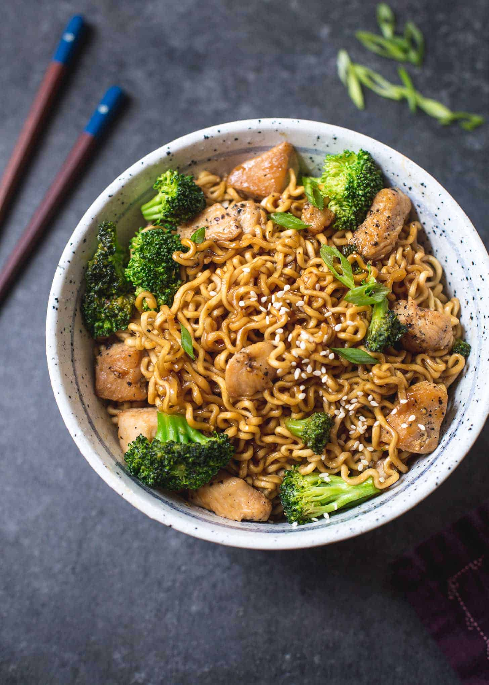

Chicken Ramen Stir-Fry

Stir-fry with chicken, broccoli, and ramen noodles topped with some sesame seeds
Description
Stir-frying is a Chinese cooking technique in which ingredients are fried in a small amount of very hot oil while being stirred or tossed in a wok. The technique originated in China and in recent centuries has spread into other parts of Asia and the West. It is similar to sautéing in Western cooking technique.
Chicken Ramen Stir-Fry is tender, springy noodles with chicken and broccoli in a sweet and savory sauce. It tastes better than take-out, has less than 400 calories, and comes together in about 20 minutes.
Ingredients
Sauce:
- ¼ cup Low-Sodium Soy Sauce
- 1 tablespoon Cornstarch
- ⅓ cup Low-Sodium Chicken Stock (substitute water)
- 1 tablespoon Rice Vinegar
- 2 tablespoon Brown Sugar
- 3 cloves Garlic, chopped
Stir-Fry:
- 6 oz Ramen Noodles (Instant Ramen works best, but discard flavor packets)
- 2 tablespoon Cooking Oil, divided
- 1 lb Boneless, Skinless Chicken Breast, chopped
- 8 oz Broccoli Florets, fresh or frozen
- 2 Green Onions, chopped (optional)
- 1 tablespoon White Sesame Seeds (optional)
Steps
- In a small mixing bowl, whisk together the soy sauce and cornstarch until no lumps remain. Add chicken stock, rice vinegar, brown sugar, and garlic and whisk until evenly combined.
- Heat a pot or bowl of water in the microwave or on the stove until steaming. Add noodles and set let them soak until just tender. Check the ramen package instructions for the recommended timing and reduce by one minute since noodles will continue to cook slightly more when added to the stir-fry. When the noodles are tender, drain.
- While noodles soak, toss chicken with some salt and pepper.
- Heat a wok or non-stick pan over medium-high heat. Add 1 tablespoon oil and then chicken. Saute until chicken is cooked through, 4 to 5 minutes. Set chicken aside.
- Return wok to medium-high heat. Add 1 tablespoon oil and then broccoli. Saute broccoli until it turns bright green and then continue cooking until broccoli is tender. If using frozen broccoli, just saute it until it's heated through and the excess water cooks off.
- Add sauce to the pan and toss to coat broccoli. Continue cooking until sauce reduces slightly, 1 to 2 minutes.
- Add chicken and noodles to the pan and toss everything to coat in sauce.
- Remove from heat and add green onions and sesame seeds, if using. Serve immediately!